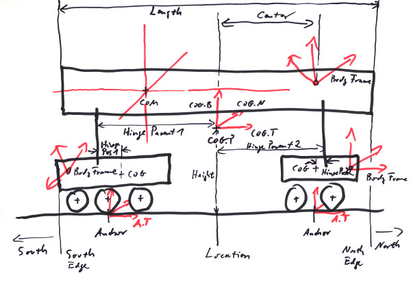
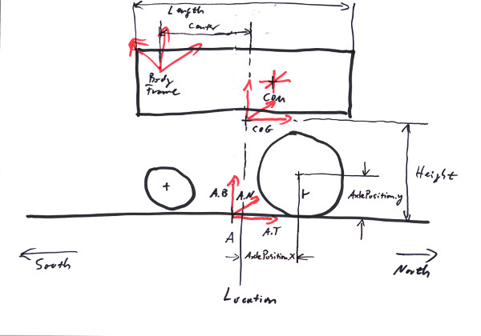
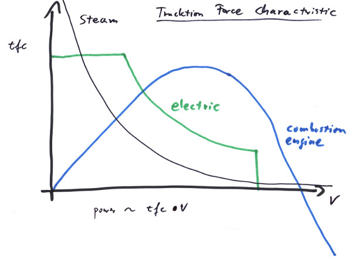

"I got here the same way, the coin did."
- Anton Chigurh
A bogie is a physical body that can run along a track. To do that it might be a wheelframe that maintains a trackjoint (a.k.a. having wheels) to stick to a track, or/and it is connected to other bogies or wheelframes by hinges:
In the image we see a bogie with two wheelframes; such kind of arrangement we tend to call a rolling stock. Due to the nature of locomotives and waggons we maintain several geometrical notions unique to such artifacts, for example we have a measurement for the bogie's height over the track that it would maintain if properly railed. There also would be some geometrical center (COG) that might be different from the Bogie's Frame and also from its center of mass (COM).
The BodyFrame is a Frame<Length,One> that we use to describe a bogie's pose in global space. It is what we typically call 'the Frame' of a bogie, returned by e.g. Body::GetFrame(). In general it will differ from the COM or even the COG, but it is highly recommended to have its T and N axes to be be parallel to the track's tangent and normal if properly railed on a straight track, since this would make the positioning of 3D models relative to the bogie much easier (see COG). Alas, this is not always possible, since the lay of the body frame is generally determined by a model creator who might want to solve different problems with it.
The COM is the physical center of mass of the bogie. It depends from the distribution of masses in our body (see Chapter 5) and is a Position<Length> typically formulated in the bodie's frame. There are no restrictions where it might be located relative to the frame or the COG; in particular it does not need to be centered over the track, albeit it usually will be. Strictly speaking, the COM comes with three directions of main inertia, these would make three orthogonal directions, also defined by the distribution of masses in the body (see Chapter 5).
The COG is the center of geometry. Rolling stock often maintain some degree of symmetry, so the COG is what we would call 'in the middle'. It is of type Frame<Length,One>, and be formulated in the bodie's frame. Asside from determining where the couplings to other rolling stock would be placed (see Chapter 9), it determines the location on a track, since a rolling stock would be located at a straight track with the COG right over the locating point (i.e. the parameter s of a track).
The Height of the bogie is the height over the track of its COG if properly railed.
The Center or better centerShift is the distance of its body frame position to the COG's NB plane.
The Shift is the distance of its body frame position to the COG's TB plane.
The Length of the bogie is what would be called 'length over buffers' in railroad business. It is understood that half the length added to the COG along the track would reach the colliding edge (a.k.a. buffer) of the bogie. For the details of buffers and couplings see Chapter 9.
The HingePosition describes the point where the axis that connects a bogie to its parent runs through. It is formulated as a 2D point in the COG's TN plane.
The HingeParentPosition describes the point where the axis that connects a bogie to its parent runs through. It is formulated as a 2D point in the parent's COG's TN plane.
The North is the direction pointing from the COG to the 'front' of a rolling stock. I.e. the direction given by COG.T. Due to the symmetric nature of many railroad vehicles it is not always obvious what that direction may be, but organisational and constructional needs require that is has one.
The South is the direction from the COG to the 'end' of a rolling stock. I.e. the direction given by -COG.T. The symmetric nature of many railroad vehicles makes it even more so necessary to have clear names for the two ends.
The Edge of a rolling stock is the farthest extend of a rolling stock along the track. There is an edge at the north end and another one at the south end of a rolling stock or a train.
The Anchor is the pose of a wheelframe that gets aligned to the track's position and orientation. See Chapter 7. It is set by a wheelframe in the center of its wheels, i.e. in the middle between its northmost and southmost wheelset.
The Location is the projection of the bodie's COG position onto the track if the bogie would be railed on a straight track. Note that albeit some involved anchors and sub-bogies maintain their own locations along the track, these in general will differ from the parent bogie's official location.
It is very advisable to keep all the body frames and anchors in parallel if properly railed on a straight track. Even if that's not exactly necessary as far as the trax library is concerned, it will make the job of rigging 3D models and collision shapes to the arrangement much easier for everybody. Also calculations for where the edges of a rolling stock lay or the railing of complex rolling stock work better.
A WheelFrame is a bogie that can host wheels. It has to have at least one wheelset to be able to maintain a trackjoint; since it puts the trackjoint's anchor into the middle of the wheels it doesn't know its location if there are none. The wheelset is positioned relative to the wheelframe by an Position2D<Length> AxlePosition, describing the axles position relative to the wheelframe's location. The wheelsets also maintain values for the maximal torques that can be excerted by an axle, like motor and braking torques or a general friction value. Note that these values add up for all the wheelsets that are attatched to a wheelframe.
WheelFrameLimits can be set for a wheelframe, to achieve several different effects. These include maximal forces and torques that are supposed to be applied by the trackjoint to maintain the track constraint (see Chapter 7). Also there are linear and angular thresholds for the deviation of the anchor from its position and orientation on the track; if those limits get exceeded, the wheelframe will derail (if derailing is active for the WheelFrame).
A TractionForceCharacteristic can be defined for a wheelframe. This defines a relationship between the velocity and the fraction of maximal motor force that can be applied at that specific velocity:
As a matter of fact by design many motors are not able to maintain their tracktion forces independent of the velocity that is already achieved. This is caused from the way a motor and the additional gears are constructed. For example a car's combustion engine and gears offer very low tracktion forces at v == 0; in fact for a motor without any gears, that force would be f == 0, since the cylinders would not move. For a locomotive on the contrary it is desired to deliver the highest tracktion forces at low speeds, what can be achieved by electric motors and by steam engines. Steam engines by nature have the perfect characteristic, only limited by exploding boilers and the maximum force that can get applied to the track without the wheels slipping. Electric motors can be electronically regulated in exactly the way as is needed, being limited to somewhere under the track friction force at the start und shut down just when vmax is reached. This is the reason, why diesel engines in railroads are often used with diesel-electric transmission.
On the other hand this TractionForceCharacteristic makes it possible to simulate real engines quite accurately without having to simulate the complex internals of engine and gears. It is possible to build a characteristic that would achieve the typical performance factors like starting tractive effort, maximum power output and top speed of a locomotive.
The momentary power output is given by the product in the diagram:
Length ds, ri; // radius of wheelset i.
Velocity v;
Force f;
Energy dE;
Time dt;
Torque Ti; // maximum motor torque of wheelset i.
Power p(v) = dE/dt
= (f * ds)/dt
= f * v
= tfc(v) * fmax * v;
= tfc(v) * ∑(Ti/ri) * v;
The top speed clearly is given by the v for which tfc(v) == 0 at the end of the characteristic; tfc(v) might become even negative after that, so the motor and gear have a braking effect. The maximum power will be achieved by high tfc(v) for reasonable big v, as can be seen from the formular. If the tfc is given by an analytic function, the maximum can be found, by demanding dp(v)/dv == 0 for v; but normally we give the characteristic by sample points along the curve, so some experimentation is needed to achive a specified maximum power output value. There is a method MaximumPowerOutput() to get that value for a Bogie/WheelFrame configuration.
Bogies provide couplings at their tip ends that can form a stable connection to other Bogies. They can be realised by a simple distance joint that allows for a maximum separtion of the two bogie tips, but does not interfere with the simulation on smaller distances. The bogies then would collide if come to close. This approach works very well with physical simulation if the distance is not selected too small, in what case in narrow curves the bogies would not collide on their outer edges and either set the simulation to strain or - if coupling forces are limited - lead to breaking couplings. More elaborate coupling connections exist that simulate the sprintype behavior of the buffers on close distances.
Automatic couplings are bliss - as one knows who ever owned a model railroad. They are realised in the trax library by definig a trigger sphere for each coupling. Those couplings then can be switched to active, passive or beeing coupled. An active coupling would couple another active one, as soon as their trigger spheres intersect. If one of the two couplings is passive, nothing would happen.
Note that with this kind of coupling the total length of a train might vary. Generally it allows for movements of waggons internal to the train.
A Bogie/WheelFrame configuration we call rolling stock, and we provide a separate interface RollingStock for it, to make the handling easier.
Everything that can ride on a track, has (potentially) a drive and couplings, we call a RailRunner and provide an interface for it.
Moving a RailRunner might look a little odd, since the velocity of a wheelframe is a constraint for the physics engine: first the wheelsets have to specify the maximum available braking and driving forces as the capabilities of the machine (see above). Of these limits a rail runner can specify what fraction to actually apply at a given moment by the RailRunner::Thrust() and the RailRunner::Brake() methods. Secondly there is a target velocity (vTarget) to be set for a rail runner by the RailRunner::TargetVelocity() method, so the physics engine knows what velocity to head for. It is clear that these limits might not be sufficient to actually reach vTarget. If they would, vTarget would be reached immediately and be kept that way. In practice the braking and driving forces will compete with other forces like gravity or mass inertia as they in reality do. To simulate the behaviour of real locomotive controls, as handled by an engineer, it is necessary to map those controls to the braking, thrust and vTarget values properly.
Take a look at the railUnreal project (see Chapter 11): with the following we give two recipes to build rolling stocks. The finished solutions are also given as levels with the railUnreal Plugin.